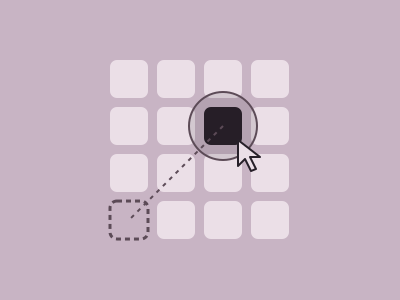

Design Change Challenge · Bakeoff 1
Pointing
Making a repetitive click-the-target task faster. Our team generated 18 interaction concepts, tested 11 techniques, and converged on a bubble cursor guided by color hints.

The challenge
Users face a 4×4 grid of boxes where they have to accurately click on a box once it lights up. Over 16 trials, the score is meausred by the time between clicks, so every millisecond spent finding, moving to, or confirming a target counts.
We inherited an existing code file, refactored it, and set our goal to decrease the mental strain of these tasks: decision time (where is the target?) and movement time (getting the pointer there).
Ideation
Each of us generated concepts independently before we compared notes. Together we produced 18 ideas spanning visual hints, cursor behavior, keyboard input, and audio feedback.
- Proximity highlighting
- Proximity + numbered selection
- Coordinate column selection
- Undo shortcut
- Arrow guidance to target
- Bubble cursor
- Zoom lens
- Adaptive gain
- Crosshair overlay
- Mini-grid flick
- Next-target color hint
- Cursor attraction
- Line to target
- Numbered rows
- Cursor scaling
- Two-handed spacebar click
- Audio cues
- Positive feedback
My concepts
My ideas focused on guiding attention: highlighting boxes as the cursor approaches, pairing that with number keys for selection, picking targets by row/column coordinates, and arrows that point toward the next target as a hinting system.
Testing & iteration
- Round 1: Prototyping and Testing We created prototypes and timed scores for 11 of our ideas, including line indicators, numeric row selection, color hints, cursor attraction, spacebar clicking, bubble cursor, zoom lens, grid lock, adaptive gain, and a crosshair overlay. The bubble cursor, which snaps selection to the nearest box so the pointer never has to land precisely, significantly outperformed every other cursor option.
- Refine: Combining Ideas We paired the bubble cursor with keyboard clicking and visual guidance. Dynamic color hinting and connecting lines between the cursor and the target box reduced both decision and movement time, which echoed the attention-guiding direction of my early concepts.
- Round 2: Dynamic vs. Fixed We compared a dynamic bubble cursor against a fixed one, both with color hints, a line to the target, and spacebar clicking.
Outcome
Our final design combined a bubble cursor with color hinting for the upcoming target, a line connecting the cursor to the target, and spacebar clicking so the hand on the mouse only has to move.
Reflection
Key takeaway
Hints help until the current box overlaps with the target one. At high speed, users found it hard to tell the current target from the hinted next one.
That final-testing observation is the clearest next step: make the current target and the hint visually distinct enough so that people can tell them apart at a glance. The project also showed me the value of testing many rough ideas early: timing quick versions of 11 techniques made the strongest option obvious in a way that discussion alone wouldn't have.